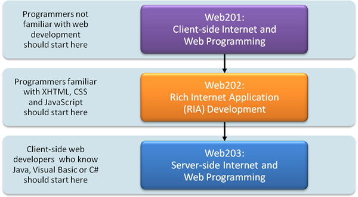

In these classes, we present a number of powerful software technologies that will enable you to build systems that can integrate Internet and web components, and remote databases. We present the “client-side” and “server-side” of web programming. For the client side we present a carefully paced introduction to using the popular JavaScript language and the closely related technologies of XHTML (Extensible HyperText Markup Language), CSS (Cascading Style Sheets) and the DOM (Document Object Model). Novices will find that the material in the JavaScript chapters presents a solid foundation for the deeper treatment of scripting in the second class—Rich Internet Application (RIA) Development—which covers XML, AJAX, Adobe Flash, Adobe Flex and Microsoft Silverlight. The third class concentrates on using technologies such as web servers, databases (integrated collections of data), PHP, Ruby on Rails, ASP.NET, ASP.NET Ajax and JavaServer Faces (JSF) to build the server side of web-based applications. These portions of applications typically run on “heavy-duty” computer systems on which organizations’ business-critical websites reside. By mastering the technologies in these courses, you’ll be able to build substantial web-based, client/server, database-intensive, “multitier” applications. Deitel & Associates, Inc. is the world’s leading programming language textbook/professional book authors and our courses are based on our best-selling books. 